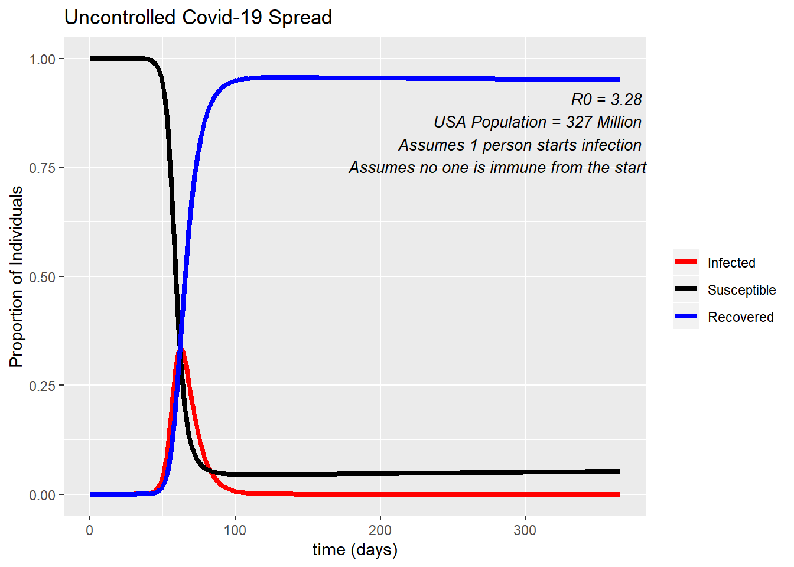
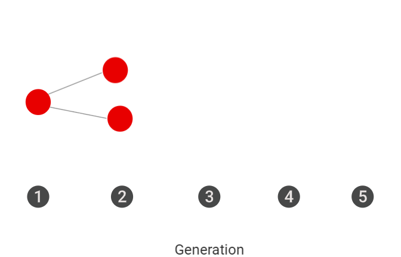

An epidemic curve, or epi curve, is a graphical display of the number of illnesses caused by a disease outbreak over time.
Complete the CDC’s training on Epidemic Curves, here.
Predict. What do you predict would be the shape of the epi curve of the COVID-19 illness in a community? Draw your prediction and label your figure.
An example of an epi curve
Epidemiologists and disease ecologists use models to help predict the spread of infectious diseases throughout a community or ecosystem. Using a SER Model, individuals are classified according to their disease status into the following categories:
Foundations of the SIR Compartmental Model. The flow between these compartments is affected by many different factors that include an individual’s health, public health, and environmental conditions.
When does an individual move between the three categories? What determines the rate of this movement?
An individual remains in the susceptible category until they are (1) exposed to the parasite and (2) infected by the parasite. The probability of exposure to the parasite and the probability of infection by the parasite will determine how quickly individuals in the S category move into the I category.
An individual remains in the infected category for the length of time that an individual is capable of transmitting the infection to susceptible individuals. This is known as the infectious period.
An individual moves from the infected category into the recovered category once the host’s immune system clears the infection.
The same principles that apply to an individual moving between compartments in the SIR model can be applied to a whole population. The graph below is an example of how an SIR model can be applied to the United States population for COVID-19. In this example we start with only one person entering the US who is infected with COVID-19. We see how quickly this disease can spread if left totally uncontrolled. After 100 days, almost the entire population of the US (all 327 million) has been infected - the only ones left in the Susceptible compartment are those being born, and immigrating in. At the peak of infection, 35% of Americans would be sick at a single time, which is 114,450,000 people!

Under what conditions does the number of infected individuals increase and decrease?
The number of infected individuals will increase if more individuals enter this category than leave this category. That is, more individuals are becoming infected than are recoverint. The number of infected individuals will decrease when more individuals are recovering than getting infected, usually because the pool of susceptible individuals has decreased.
How fast can an infection spread through a community?
The speed at which a parasite can spread through a community is related to the basic reproductive number of the pathogen, the R0 value. You may have noticed it on the “Uncontrolled COVID-19 Spread” graph.
The R0 value is the number of new infections caused by a single infected individual. The R0 of the COVID-19 infection has been found to have a range from 1.4 - 6.49, with an average of 3.28.(The scientific article that found this can be located here). This range is due to time period, location, and method of calculation. This means, on average, for every infected individual, there are expected to be 3 new cases that arise.
Model the spread of the COVID-19, beginning with a single infected individual and assuming an R0 of 2. How many infections may arise after five generations? The first two generations have been modeled for you. 
In the 5th generation there should be 16 infected individuals in the 5th generation.
Make a prediction. Order the following diseases by their contagiousness (R0): COVID-19, Influenza, Measles, Bubonic Plague. Use the MicrobeScope Application to compare R0 of different diseases.
R0 influenza = 1.53
R0 measles = 12-18
COVID-19 = 3.28
Plague = 3.5
There are multiple public health measures that can be put into effect with the aim of stopping or limiting the spread of an infectious disease in a population. The most effective public health measures are related to the disease biology, ecology, and host population. There are six different measures that can be used on their own or in cobination with each other. The most effective responses to slow the spread of an epidemic typically involve more than one public health measure.
Isolation is when you remove infected persons from the population. This limits or completely stops their contact with those in the susceptible population, slowing the spread of disease in the population.
During the time of the Plauge, the term quarantine referred to the 40 day period that people had to remain on ships before coming to land. Now when people quarantine, it refers to individuals seperating themselves from the population before or after exposure to a disease. By seperating from the population, these individuals prevent transmission to new hosts. Quarantine protects the population from acquiring the disease from exposed individuals.
In the United States, many cities, counties, and states are issuing mandatory “Stay-At-Home” or “Safer-At-Home” orders to their citizens. These orders are instructing people to remain in their home and asking them only to leave for essential functions (e.g. essential jobs, grocery shopping, doctor’s visits). This is a type of quarantine, and when people participate properly, they are playing their part in slowing the spread of COVID-19.
In the graph below, you can see how the proportion of people infected changes based on what percent of the population abides by the “Safer-At-Home” orders.
The percent of the population abiding by the “Safer-At-Home” policies included in this figure were resported in a recent study by Unacast. If you take a look at this website, you can see how US states are scoring in lowering their activity and physical distancing. Wyoming is doing the worst by only decreasing their activity by 10%, while some states have decreased their activity by 50%. In the United States as a whole, we have decreased our activity by about 36%.
Many diseases have preventative vaccines, or effective drugs that can be used to decrease the spread of the disease. Having a vaccine can make people “recovered” from the disease without ever having to be infected. Drugs that are used for treatment will target those in the infected category, decreasing their infectious period. However, developing these treatments is not an easy feat. Treatments and vaccines for COVID-19 are still in development, some have made their way into clinical trials but it can still take months to be approved by the FDA for general use even on a fast track program.
Evacuation is implemented by seperating susceptible individuals from the population. In public health, evacuation is typically used during times of natural disasters. For example, the population of a state may be evacuated while it’s on the path of a category 5 hurricane. Evacuating a population can also play a role in how a disease will spread.
Precautions are also recommended by public health officials during the COVID-19 pandemic. Precautions include washing your hands properly, using gloves and face masks, respiratory hygiene, cough etiquette (covering your coughs and sneezes), and cleaning and disinfecting environmental surfaces. Doing any or all of these precaution measures can decrease your risk of contracting the disease, and can lower the risk of the passing on the disease.
Culling is the act of decreasing the population through selective slaughter. This practice is used to respond to disease outbreaks in cattle and wildlife. This is not a measure used on humans for human disease. For zoonotic diseases that are passed directly from animals to humans, one of the measures quickly implemented is the culling of the population of infected animals.
Using the SIR compartmental model and the 6 public health measures above, draw arrows describing how each measure will affect the population. Label the arrows with the measure. Note: some measures can affect more than one compartment.